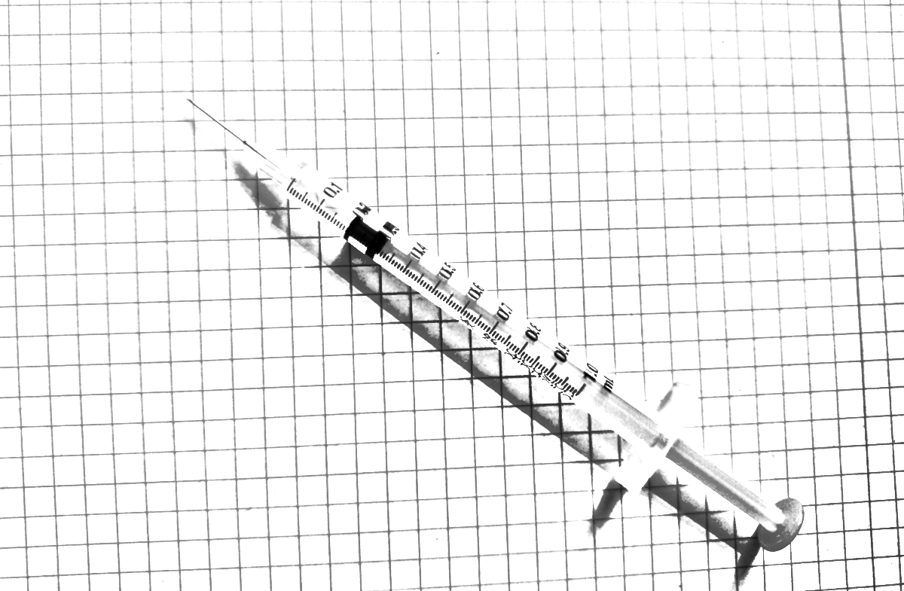
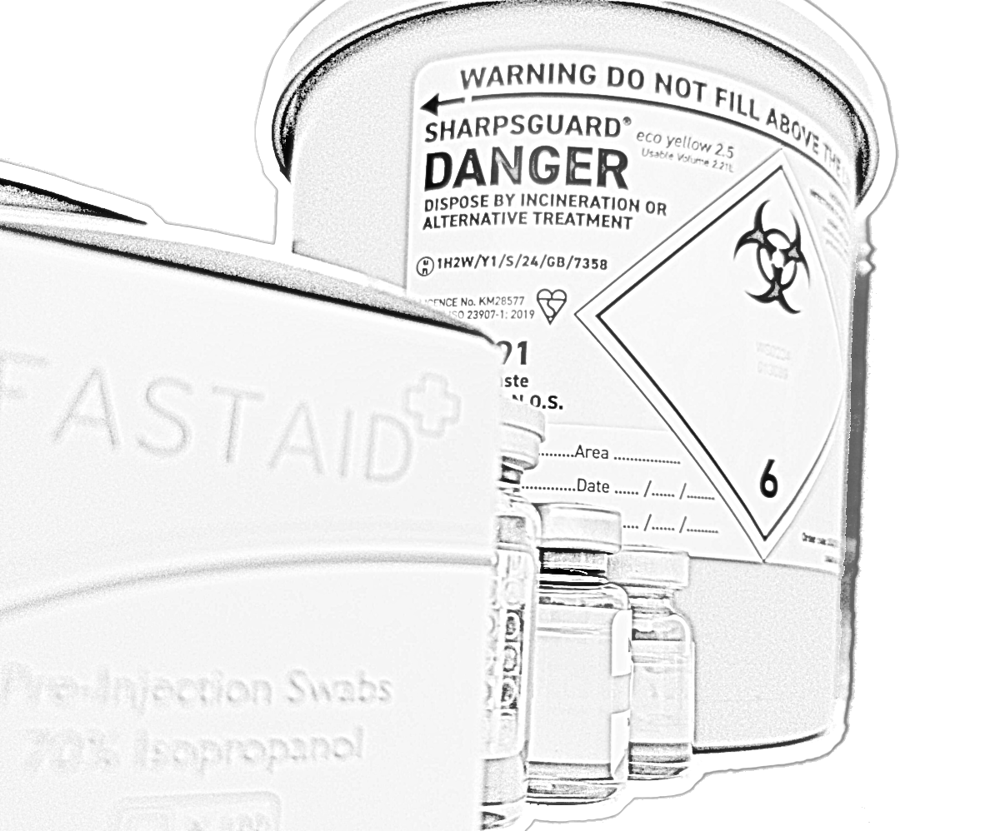
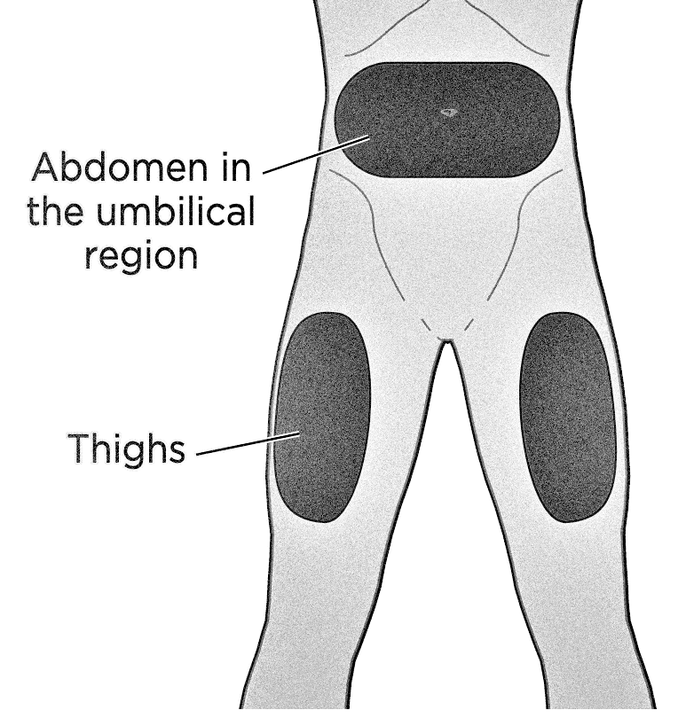
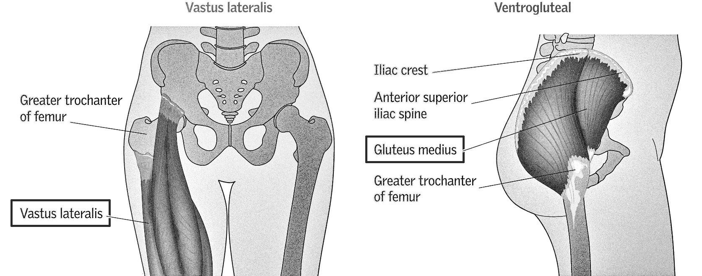

[printable PDF version] (print two-sided on short edge)

Some trans people decide that because of long waiting times for treatment on the NHS, they would rather give themselves hormones from a non-pharmaceutical source than wait several years to start medically transitioning. This zine is not a guide on how to acquire hormones, but it is about how to safely inject them. It is applicable to oestrogen, testosterone, and other similar hormones that come in multi-dose / reusable vials.
Disclaimer: This is not written by a medical professional. You must do your own research on the relevant risks. The author takes no responsibility for what you choose to do with your body or unexpected / unwelcome side effects.

This zine is free to reprint and redistribute. You can translate, update and add local information. If you sell physical copies, donate any profits to mutual aid. This online version must always remain free.
Ideally get needles from a trustworthy source, from medical supply shops such as exchangesupplies.org / medisave.co.uk, or from local needle exchanges. To find a local needle exchange, search ‘needle exchange (your local council / city)’.
To draw from your vial, you will need to use a needle that is 23G or smaller (bigger number = smaller gauge = thinner needle, 18G will wreck it). This avoids damaging the stopper, which if broken will allow bacteria to get inside of the vial! Before drawing, wipe the top of the vial with a 70% ethanol / isopropyl alcohol swab. Never use anything else: not hand sanitiser, no other alcohol percentage. It is better to use nothing than an alternative. You do not need to use an alcohol swab on your skin before injecting; this can cause irritation if the alcohol has not fully evaporated. If your skin has been recently washed with soap and water and is still clean, you do not need to use a swab.
If your vial has a circle on the top of the stopper, poke it inside the circle. If it doesn’t then anywhere near the centre is okay. Do your best to poke a different place on the stopper each time, and poke it at a 90 degree angle (right angle, straight down).
Dispose of the needle in a sharps bin. Sometimes your local council will pick them up from your address when they are full, or you will need to find a place nearby to dispose them (such as a needle exchange).
Before drawing from your vial, draw air into your syringe that is equal to your dose; if you’re injecting 0.1 mL, then draw 0.1 mL of air into your syringe, remove the cap, put the needle into the vial, push in the air and then draw your dose. This equalises the pressure inside of the vial, which is important as under-pressurising or over-pressurising the vial damages the stopper over time.
Never reuse a needle / syringe you or someone else has used and never try to wash out one to reuse it. Do not keep medication inside of a syringe for longer than an hour; they are not sterile beyond that timeframe, and they are not made for storing medication. A needle should only touch the vial stopper and your skin.
If you have been pricked by somebody else’s needle, encourage bleeding from the site by squeezing it and get to A&E or dial 111. Needle sticking is an extremely easy way to spread blood borne diseases (such as HIV and hepatitis B or C). If you are often at risk of this it is worth asking your local sexual health service for PreP.
This depends on whether you are injecting into your muscle (IM) or your fat (subq). For both you will need a syringe with the capacity of 1 mL at maximum. (If you inject less than 0.1 mL it is ideal to use smaller syringes such as 0.5 mL or 0.3 mL.)
For subq it is easiest to use a low deadspace fixed needle syringe, (i.e. needle and syringe are 1 combined object). Unisharp fixed needles are ideal; 27G and 29G are easy to find online and in needle exchanges.
For IM currently the only seller of appropriate fixed needle syringes is exchangesupplies. If you do not buy from them you will likely need separate needles and syringes (note that low / reduced deadspace syringes are incompatible with low deadspace needles, choose one or the other). There are tutorials online of how to put a needle onto a syringe.
If you are using separate needles and syringes to draw and inject (which is not necessary, you can inject with the same needle you use to draw), you need to “clear the deadspace”, after drawing your dose. Deadspace is the space in your needle (the hub) that the plunger cannot push medication out of. If you replace your needle without clearing it, you lose the medication in the drawing needle when swapping, and some of your dose inside the syringe will fill the injection needle’s deadspace instead of going inside of you.
Using 0.1 mL as an example, after drawing your dose and taking your needle out of the vial, you will need to draw back the plunger to draw the liquid inside the needle out of it and into the syringe. Now you have 0.1 mL + deadspace + air inside the syringe. Then detach the drawing needle, replace it with the injection needle, then carefully push up the plunger until a tiny drop leaves the top of the needle. The plunger is now at 0.1 mL, with the deadspace filling the hub of the injection needle, and you can inject knowing you have the right dose.
Using any gauge mentioned in this zine will work for any vial, but if your vial has a thicker oil (e.g. castor) then using a thicker gauge needle (such as 23G or 25G) will make drawing faster. Thinner needles still work fine but they will be slow. You can heat the vial with your body heat by putting it in your armpit / bra / thighs to make drawing quicker. (Examples of thinner oils are MCT and grapeseed oil (GSO).)
When injecting into fat (subq), you can use a needle between 27G and 31G that is between 8 mm (3/8ths inch) and 16 mm (5/8ths inch). You can inject at a 45 or 90 degree angle, and if you want you can gently pinch the skin + fat to make sure you won’t inject beyond the layer of fat. If you are leaking / bleeding from the site you can leave the needle in for 5 seconds after finishing pushing down the plunger. Injecting slowly will reduce pain.
Swap between at least 2 sites (e.g. left thigh and right thigh), trying to inject in different places each time. If you can feel a bump under the skin from a previous injection, avoid injecting near it until it is gone. If you do not do this scar tissue will build up at the site you regularly inject in, making it harder and more painful to inject. This will not impact the effectiveness of your HRT.
The abdomen and thighs are the easiest places to self-inject. Stay 2.5 cm (1 inch) away from the belly button.
Subcutaneous injection sites

A lot of people do subq because they would rather use a smaller needle that requires less preparation and inject less than 0.5 mL . Injecting over 0.5 mL subq is usually quite painful, and it is worth splitting large injections into 2 smaller ones. For most formulations there is no difference between IM and subq (this excludes EUn and TUn).
When injecting into muscle (IM) you can use a needle between 23G and 27G that is between 1 inch (25 mm) and 1.5 inches (37 mm). Inject at a 90 degree angle.
If you experience leaking from the site, try the Z-track method. This involves pulling the skin back, injecting, removing the needle and then letting go of your skin (there are videos online). Injecting slowly will reduce pain.
Swap between at least 2 sites (e.g left thigh and right thigh), trying to inject in different places each time. If you do not do this scar tissue will build up at the site you regularly inject in, making it harder and more painful to inject. This will not impact the effectiveness of your HRT.
The vastus lateralis and the ventrogluteal are the easiest places to self-inject.
Intramuscular injection sites

Some people use IM because they have between 0.5 mL and 4 mL to inject (over 4 mL IM is quite painful). Some people experience irritation from injecting subq, and they would rather not take an antihistamine to reduce this or taking one doesn’t help. For most formulations there is no difference between IM and subq (this excludes EUn and TUn).
The main symptoms are:
Do not use the vial if it has any of these symptoms. It is not sterile, and you could get a serious infection.
Common symptoms of infections are red streaks coming from the injection site, pus / fluid leaking from it a day or more after injecting, severe swelling, and fever (unrelated to other illness). If you notice any of these signs, or otherwise feel unwell / worried, go to your GP as soon as possible or call 111. Infections are usually easily treated when caught early. It is better to get medical help (even if turns out to not be an infection) rather than wait for it to get worse.
You must store the vial in a dark place (e.g. in a cupboard / box) and ideally away from heat sources (e.g. not on top of a radiator) and at room temperature (e.g. not in the fridge or in a car).
This depends on what you’re taking. There is no benefit to basing your starting dose from a pre-HRT blood test or blood test on a different type of HRT as it won’t give you information on how you’ll react to injectable hormones. These are average starting doses. To know if your levels are good for your long-term health, you must have regular blood tests.
For Oestradiol Enanthate (EEn) and Oestradiol Cypionate (EC), 4 mg every week suppresses testosterone for the vast majority of transfemmes. For Oestradiol Valerate (EV), 4 mg every 5 days or 5 mg every week.
If you do a low dose, you will likely just get breast development and nothing else.
For Testosterone Enanthate (TE or TEn) and Testosterone Cypionate (TC), 50 mg every week is a standard starting dose for transmascs. If you want to do a low dose you start on 25 mg weekly.
You cannot do a low dose to avoid an effect you don’t like.
Ideally get your blood tested between 6 to 8 weeks after starting injectable hormones. Having to wait longer than this is okay for those on monotherapy (i.e. only testosterone or only estradiol) but blood tests are important for your long term health and to check if your HRT dose is effective. After your first blood test, getting your blood tested roughly every 12 months is enough.
Ideally test your hormones at trough, i.e. on the same day you take your HRT, but before you inject. Being 1 day early or late is fine as long as you haven’t injected. You can inject after the blood test.
If you are taking only oestrogen, test E2 (Oestradiol) and Testosterone (T). At trough your E2 should be at least 350 pmol/L (up to 750 pmol/L is fine if needed to suppress T production), and T below 1.5 nmol/L.
If you are taking only testosterone, test full bloud count (FBC) and T. You can test E2 to confirm menses have stopped but it isn’t necessary. T should be between 10–25 nmol/L (lower end of the range at trough, higher end at peak), FBC in male range.
(‘Free Oestrogen’ and ‘Free Testosterone’ are the wrong tests. ‘Total Testosterone’ is correct.)
If you get results in different units, converters for E2 and T exist online (e.g. unitslab.com/node/113 for E2 and unitslab.com/node/136 for T).
If your levels are high or low, change your dosage accordingly, and retest after 6 to 8 weeks.
In the UK it’s cheapest to try to ask your GP to do your blood tests for you on the NHS as harm reduction, but they can refuse this request and often do. You can ask if you can pay them to do it, but your GP may still not agree.
There are many private clinics who will do the relevant blood tests: Randox, Forth With Life (the cheapest option), Forth With Life and Medichecks (usually easier locations to get to but more expensive) and others. If you can get to London, cliniQ and 56T will do free blood tests.
It’s highly recommended you do an in-clinic test as the at-home / finger prick test devices are often highly inaccurate and unreliable when it comes to hormone levels.